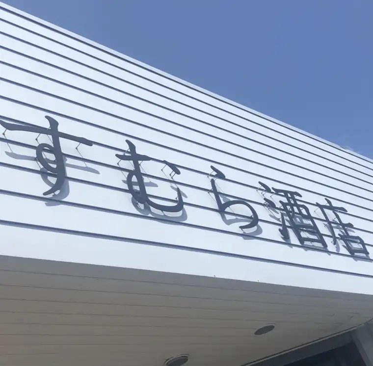

![すむら酒店]()
☆ Liquor Shop Sumura ☆ 山口・宇部 ☆ 時をおすそわけ ☆
★☆★ ようこそ「すむら酒店」へ ★ 一本のワインは、土地の歴史と、造り手の手仕事と、瓶の中で過ぎた歳月の結晶です ★ ヴィンテージ・シャンパーニュ 入荷 ★ ボルドー2024 プリムール 予約受付中 ★ 記念日の一本、承ります ★☆★
■ いらっしゃいませ ■

▲ 山口県宇部市の店舗
私どもは山口県宇部市に店舗を構え、ボルドーやブルゴーニュといったフランス銘醸ワインを中心に取り揃えております。
年間極限られた数しか入荷しない人気生産者だけではなく、新しい時代を担うであろう優秀な生産者のワイン、信頼のおける供給元による古酒など、専門的な知識と経験に基づき様々なワインなどに関するサービスをご提供しております。
オンラインショップに掲載されている商品は、私どもの在庫のごく一部にすぎません。もしお探しのワインなどございましたらお気軽にお問い合わせください。
◆ 更新履歴 NEW!
◆ メルマガのご案内
入荷情報や、希少なお酒のご案内をお届けしています。ご登録はこちらから。